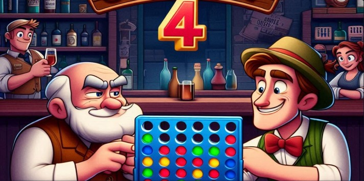

4 En Springfield
¡Prepárate para desafiar a tus amigos en un emocionante juego de estrategia y rapidez mental! 4 En Springfield es una versión vibrante y divertida del clásico juego "4 en linea", ambientada en el icónico mundo de Springfield, donde los personajes más queridos de Los Simpson te acompañarán en esta aventura.
Ver trailer
Imagenes
Instrucciones
El objetivo es alinear cuatro en línea vertical, horizontal o diagonal antes que tu oponente. En cada turno, los jugadores dejan caer una ficha en la columna que prefieran. Puedes formar una fila de cuatro en horizontal, vertical o diagonal. ¡El primero en conseguirlo gana! Ahora empieza la partida y a divertirse.
SuperFan
¡Este juego es increíble! Me encanta la temática de los Simpsons.
GamePro
La estrategia es clave en este juego. ¡No puedo dejar de jugarlo!